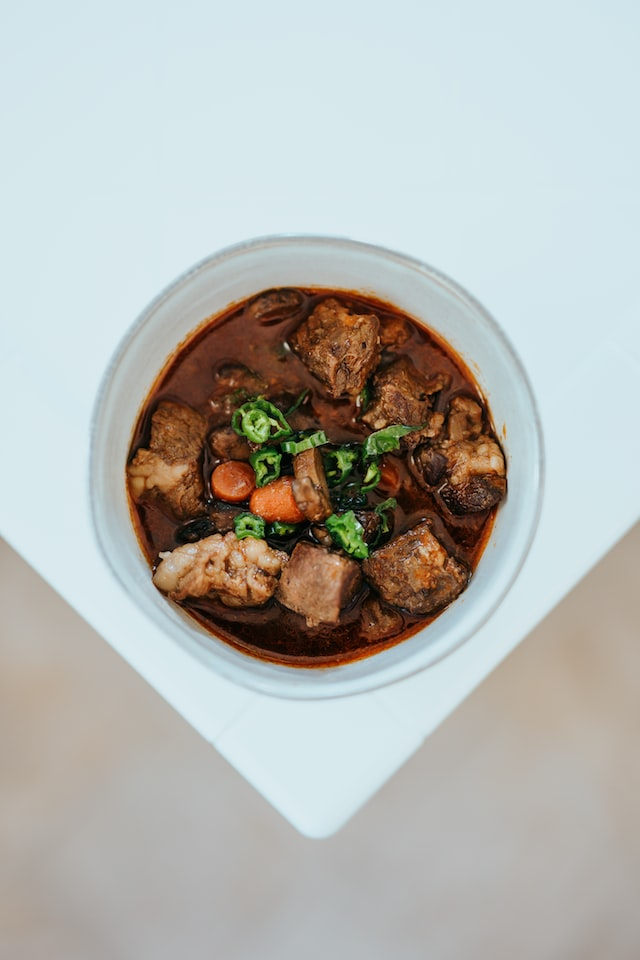

Photo by Nathan Dumlao on Unsplash
Description
This recipe is comes from Vikingars Gästabud (The Viking Feast), and makes 4 servings.
Ingredients
- 8 cups of water
- 1/2 kg meat of choice
- 3-4 carrots
- 3 yellow onions
- 1 turnip
- 1.5 teaspoons salt
- Dash of black pepper
- Thyme
Steps
- Season the meat with salt and pepper.
- Put the meat in the kettle.
- Pour water over the meat so it is covered and place the kettle over fire.
- Turn kettle every 5-10 minutes to ensure even spread of heat.
- Cook the meat for 1 hour after the water boils, adding water if needed to keep meat covered.
- Peel and cut the vegatables into pieces.
- Add the vegetables and thyme, and boil for 15 minutes or until vegetables are tender.
- Serve dish with bread.
Return to top
Return to home page